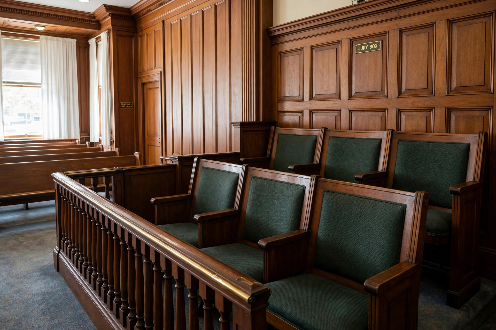

From Wikipedia, the free encyclopedia

A retrial is a new trial of a case that has already been tried at least once. Retrials occur when the first proceeding ended without a valid final judgment — for example, because the jury could not reach a verdict (a "hung jury"), because of serious procedural error or juror misconduct, or because an appellate court reversed the conviction or judgment and remanded the case for further proceedings.
Common grounds include a hung jury, a successful appeal based on trial error, a mistrial declared by the judge, or, in civil cases, a verdict set aside as against the weight of the evidence. A retrial is generally a complete rehearing: the parties present their evidence anew before a new fact-finder, although transcripts from the first trial may be used to impeach witnesses whose testimony changes.
The prohibition on double jeopardy — in the United States, the Fifth Amendment; expressed in the maxim ne bis in idem — sharply limits retrials after an acquittal: a defendant acquitted at trial generally cannot be tried again for the same offence, even if the acquittal rested on legal error. Where the first trial ended in a mistrial without the defendant's consent, retrial is permitted only if there was "manifest necessity" for ending the trial. A retrial after a conviction that the defendant successfully appealed is ordinarily allowed, since the slate is wiped clean; but if the appeal succeeds because the evidence was legally insufficient, the acquittal-equivalent bars any retrial.